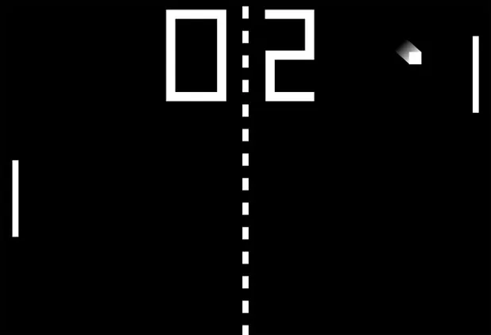
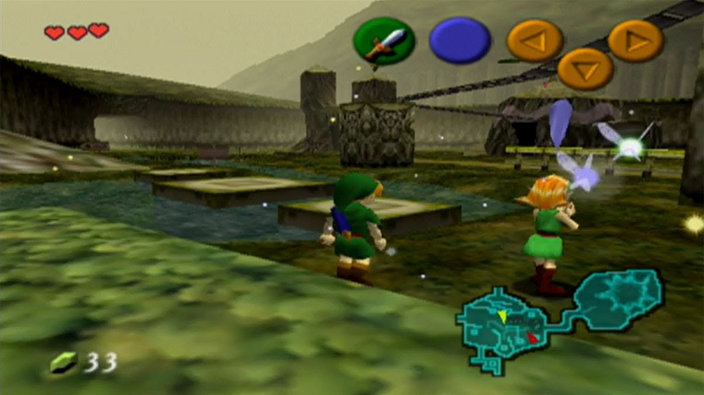
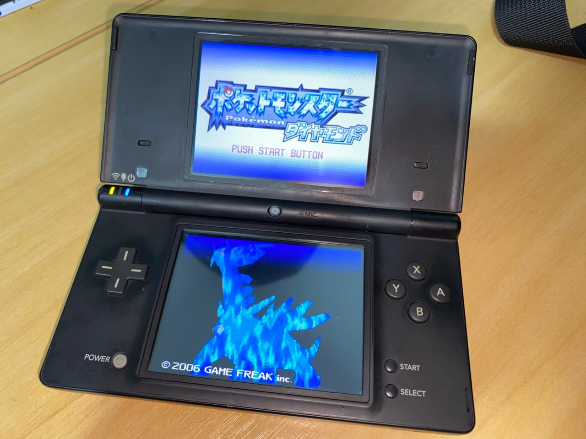

Você está no level 1: por enquanto só a página inicial está liberada.
Para desbloquear as outras abas e subir de level, faça seu cadastro!
1 de 5 abas desbloqueadas
Subir de levelHoje muita gente acha que gráfico bonito é sinônimo de jogo bom. Mas a qualidade de um jogo vai muito além do visual: está na criatividade, na história, nos personagens e na diversão.
O LastSave nasceu para lembrar disso. Aqui você percorre a história dos games como quem carrega um save antigo, relembrando (ou descobrindo pela primeira vez) os momentos que marcaram gerações.
É um projeto feito por um apaixonado por videogames, para pessoas de todas as idades, até para quem nunca segurou um controle.
Faça seu cadastro para liberar todas as fases do site.

Level 1Dos laboratórios dos anos 50 até os consoles de hoje, com um resumo da guerra dos consoles.

Level 2Zelda, Metroid, Castlevania, Minecraft e Pokémon: os jogos que ditaram as regras.

Level 3Como os videogames entraram na minha vida e os jogos que me marcaram.
Teste o que você aprendeu e veja seus resultados em gráficos.
Jogo bom é feito com cuidado, não só pensando em vender.
Jogos e franquias importantes não podem ser esquecidos.
Preservar o que marcou várias gerações de jogadores.
O cadastro é rápido e libera todo o conteúdo do site.
Começar agora